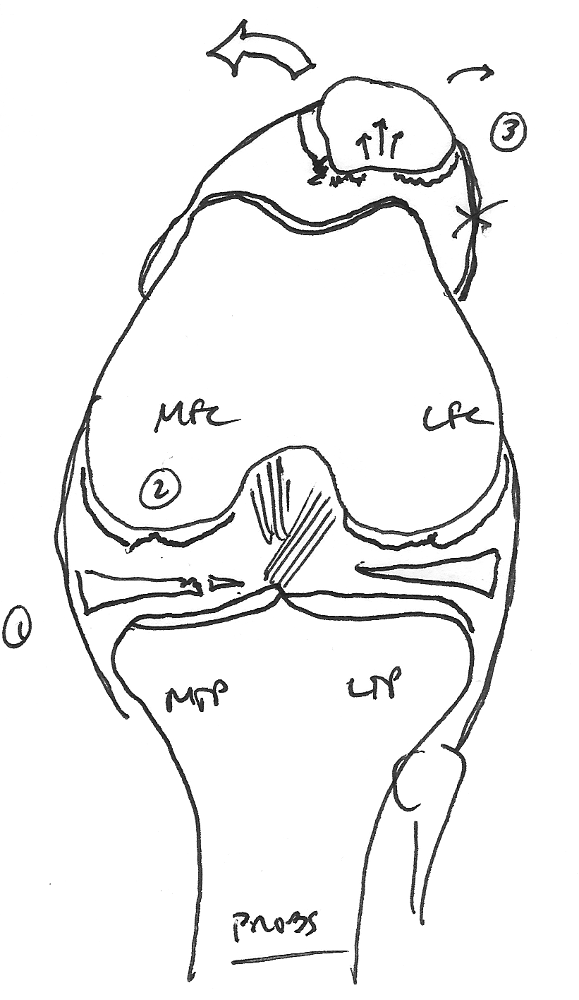

Arthroscopy Is Amazing

Three days ago I was hobbling around on a sore knee with a torn meniscus. But after just three days of icing and Ibuprofen and resting on the couch already my knee is almost better than it was before. This arthroscopic surgery stuff is amazing.
My knee had been getting progressively worse for the past few months. But the clincher was six weeks ago, when I was chasing around a dog that was loose in our front yard. A twist, pop, and I was down. The doctor I saw the next day confirmed that it wasn't anything "serious" like a torn ligament, but something was definitely wrong. When we went up to a week of family camping a few weeks back, I couldn't go on any hikes and could barely play ping pong. It was a real bummer.
So I met with a sports medicine doctor at Palo Alto Medical Foundation and got an MRI. He saw a few things wrong in there. A few days later, I was getting the procedure done. Viola.
Afterwards I was surprised that it didn't hurt. They did prescribe some pain medication (Hydrocodone plus Acetaminophen) that I've been taking when I go to bed, but haven't needed during the day. I've been using a machine that pumps ice water through a pad around my knee all day to keep it cool, and that's worked really well. So much better than ice packs. Totally recommend the ice machine.
Thanks to the good surgical team at Palo Alto Medical Foundation especially Dr. Colin Eakin. Their surgery center on Willow Road made the whole experience smooth and reassuring.
But one pro tip for you out there considering this. Don't read the wikipedia article on General Anesthesia the night before surgery. It's crazy stuff. Especially the parts about how we're still not really sure how it works, or the part about how the level of anesthesia where it is safe to operate is right between "excitement" where you vomit and twitch, and "overdose" where you stop breathing. Don't read that part.
I'm back to work tomorrow, and I expect to be back on my bike by next week!
Comments
Comments powered by Disqus